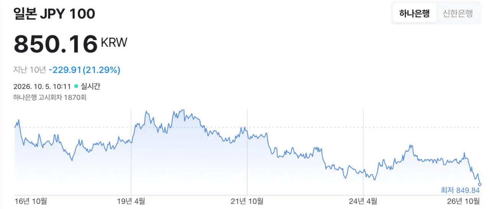

10년동안 원화 대비 엔화가 가장 싼 날이 오늘임.

10년동안 원화 대비 엔화가 가장 싼 날이 오늘임.
나도 860 ㅠㅠ
제 월급이 지금 종이조각이 되고 있다는 건가요??
월급이요? ㅎ 가서 8시 이후 세일 도시락이나 사십쇼
울 동내는 사람이 많아서 운동끝나고 11시에 가도 아직 30퍼 할인임ㅠㅠ
920일때 다녀왔는데 ㅠㅠ
fx전사 쿠루미 애니메이션 시작하니 현실도 반영인가
일본 자국민들 민생은 어찌되는겨
890에 100만원
880에 100만원
860에 100만원했는데ㅜㅠ
이제 1000만원 하면 되네
분할매수
너도? 아 나도!
850원에 500만원 시원하게 가자 평단 낮출겸
투자목적으로 환전하는거면 빡세지않음? 950~1000원은찍어야 십만원먹는건데
그 다 부자가 아니다
삼백만원이 존나 큰 돈인 사람도 있는거야
5프로 오르고 내려봐야 수수료떼면 몇만원 오르고 내리는거지만 그거마저 피같이 아깝고 소중한 사람이 있는거야
정보)대부분의 은행들은 엔화보다 달러우대율이더좋아서 투자목적으로 엔화환전하는건 바보짓이다
주식계좌에서 하면 환전 수수료 엄청 싸서 바보짓 아닌데?
분할 매수 할때마다 2배로 넣었어야지
낮다고 생각될때 조금씩 사는데 계속 떨어짐ㅋㅋ 그냥 매일 천엔씩 모으기로 바꿧다
나중에 이민가야해서 엔화로도 주식투자하고있는데 씨발 사람살려!!!!!!!!!
1~2년전에 700엔대를 내가본거같앗는데
지금이니?!!!
명품가방 일본가서 사고 관세내도 한국에서 사는 것보다 거의 50만원 차이
택스리펀안해주나? 그걸로 관세내면 더차이날텐데 꿀이네
드디어 성공했구나 아베 이놈...
술사와야겠다
와 금리 올려도 이러네
우리도 올리니까 ㅋㅋ
내일일수도 있어
920원일 때 올인해서 환전함
ㅈ됌
나도
내년 삼하 환전액이 법인세포함 650조예상이던데 13년전인가? 750원 이였던적이있던데 700대깨지않을까 싶음
한화도 낮은데..
분명히 700원대에 갔다온적있는데 싶었는데 진짜 20년전 최저때였네
지금 엔화 가치 수준이면 700대로 떨어져도 이상하지는 않음
엔화 1500원 시절도 있었는데..
거의 반토막 난거 아녀
일본 국민들은 진짜 ㅈ 됐겠는데
860엔에 환전했는데 더 떨어진다고?? ㅋㅋㅋ 일본망했냐고 아 ㅋㅋㅋ